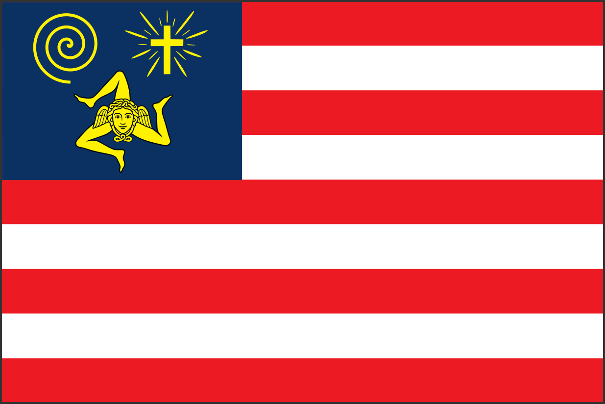

Original Sicilian-American Flag Concept
This page preserves the earlier design exploration. It is not the current Castellammarese-American flag.

The Original Idea
The earlier flag placed three equal symbols in the blue canton: the Cross, the Trinacria, and Archimedes’ Spiral. Together they represented faith, Sicilian cultural identity, and reason or ingenuity. Nine stripes represented Sicily’s historic provinces while using the visual rhythm of an American flag.
That exploration eventually led to a more locally rooted flag centered on Castellammare del Golfo. The three original devices remain active as separate Symbols of Sicilian Americans, while the current flag’s canton is primarily Castellammare-heraldic.